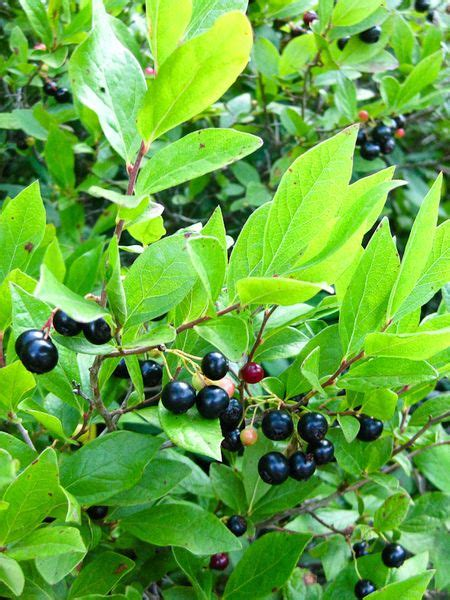
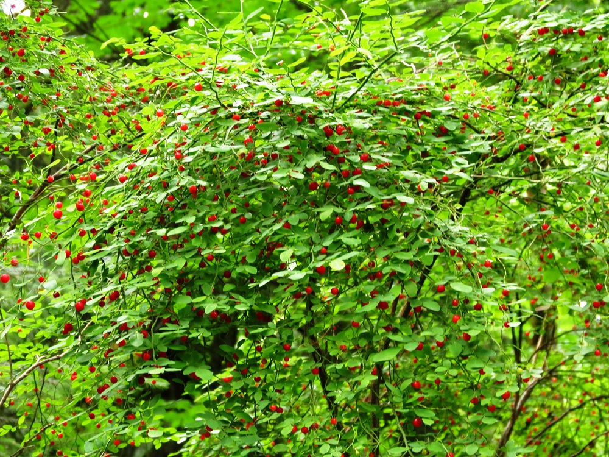

Huckleberry (Vaccinium spp.)
Fruit: sḵw’eḵwchs, Bush: sḵw’eḵwchsáy̓


Planting
Huckleberries thrive in well-drained acidic soil. Follow these steps to plant and care for huckleberries:
- Choose a location with partial shade or dappled sunlight.
- Amend the soil with organic matter, such as peat moss or compost.
- Dig a hole slightly larger than the root ball and place the plant in the hole.
- Backfill the hole with soil and gently firm it around the plant.
- Water the plant regularly, especially during dry periods.
Usage
Huckleberries have both culinary and cultural significance:
- The berries are delicious and can be eaten fresh, used in pies, jams, and sauces.
- Huckleberries are traditionally used in Indigenous cuisine and have cultural importance.
- Some species of huckleberries have medicinal properties and are used in herbal remedies.
Environmental Impact
Huckleberries are ecologically valuable:
- They provide food for various wildlife species, including birds and mammals.
- Their dense growth helps protect the soil from erosion and provides habitat for small animals.
- Huckleberry plants contribute to the overall biodiversity and health of the ecosystem.